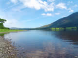
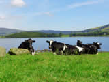
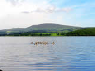
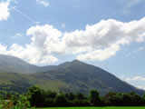
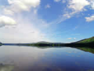
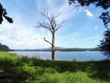
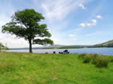
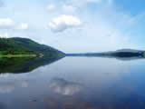

Information and Images of Bassenthwaite Lake
Bassenthwaite Lake is said to have been the inspiration behind Tennysons description of the lake into which “Excalibur” was thrown in his poem, “Morte d’Arthur”.
Bassenthwaite, the only waters officially titled “ Lake”, is 4 miles long, ¾ of a mile wide and relatively shallow at a maximum depth of 60 feet. It is home to the rare small silvery Vendace fish, a relation of trout and salmon. Additionally, there are Perch, Pike, Roach, Trout, Salmon, and reedy areas of the waters edge support many species of bird-life.
Access points to the western shore are from lay-byes on the busy A66. The A591 along the eastern side has a few parking areas including the well organized car-park of Mirehouse/Dodd with its refreshment-room and toilet facilities.
Paths from here lead upwards along forest trails, one of which is the fairly steep climb to the Osprey Viewing area, (open during summer months only).
Directly opposite the park, is the entrance to the much visited Historic House and gardens of Mirehouse. A small admission charge allows you to take the wooded path through the very beautiful grounds to the waters edge, and, on to the pre-Norman Church of St. Bega’s.
This is a non-commercialised lake, and the only boats to be seen are those belonging to the local sailing club. The views from lake level, and from the hills above, especially from the heights of Skiddaw, are wonderful and well worth the effort of tackling some of the steeper ascents.
A particularly convenient feature of the car-park, is the positioning of a bus-stop at the entrance. Regular services operate from Keswick, Carlisle, Penrith and Workington. However, please note that some only run between March 20 and October 29. Enquire at the Tourist Information Centres for details.
Click on the photographs for a larger image.
All images open in a new window.
All images are 800x 600 resolution and may take a long time to download on slower internet connections.
For larger images (1024x768), please visit our
computer wallpapers section.
 |
 |
 |
 |
 |
 |
 |
 |